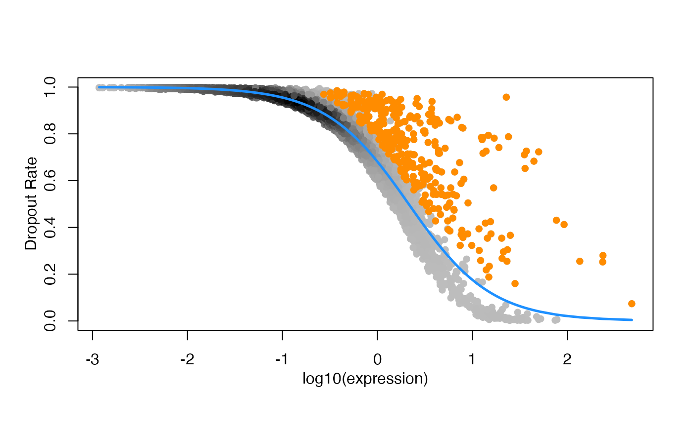

Multiple Metric Learning Methods in scLearn
Bin Duan
SJTUbinduan@sjtu.edu.cn
2025-05-12
Source:vignettes/scLearn-Metric_Learning.Rmd
scLearn-Metric_Learning.RmdIntroduction
Comprehensive summary table of the six metric learning methods used in scLearn
| Method | Core Idea | Advantages | Disadvantages | Recommended Sample Size |
|---|---|---|---|---|
| DCA (Discriminative Component Analysis) | Linear transformation maximizing the between-class / within-class variance ratio (Fisher-style) | Fast, simple, stable; no iterative optimization | Assumes linear class separability; not suitable for complex manifolds | Small to medium |
| LMNN (Large Margin Nearest Neighbors) | Learns a transformation that maintains class-consistent k-NN relationships with margin constraints | High classification accuracy; interpretable | Computationally expensive; requires many triplets; slow without parallelization | Small to medium |
| MSL-LMNN (Multi-Similarity Loss-Based Metric Learning) | Enhances LMNN by leveraging multiple similarity cues and continuous loss instead of discrete triplets | More stable optimization; better generalization with fewer pairs | Still requires pairwise comparisons; moderately slow without batching | Medium to large |
| NCA (Neighborhood Components Analysis) | Maximizes the probability of correct classification under stochastic nearest neighbors | Theoretically elegant; good embedding quality | Sensitive to noise; no margin; costly without approximate neighbors | Small to medium |
| ITML (Information-Theoretic Metric Learning) | Learns Mahalanobis distance with relative constraints, regularized by information-theoretic divergence | Robust to noise; stable convergence; works with few constraints | Requires careful tuning; slow on high-dimensional data | Small to medium |
| MMC (Maximum Margin Clustering) | Maximizes inter-class separation while minimizing intra-class spread using scatter matrices | Good for clustering and large-margin separation | High memory usage; expensive eigen decomposition; difficult on large datasets | Medium (with memory) |
Data preparation
Reference Cell Database: baron-humanQuery Cell Data: Muraro-human
data(RefCellData)
data(QueryCellData)
stratified_sample <- function(cell_types, n_total = 300, min_per_type = 10) {
sampled <- lapply(split(seq_along(cell_types), cell_types), function(idx) {
if(length(idx) > min_per_type) {
sample(idx, max(min_per_type, round(n_total * length(idx)/length(cell_types))))
} else {
idx
}
})
unlist(sampled)
}
set.seed(123)
cell_types <- colData(RefCellData)$cell_type1
sampled_cells <- stratified_sample(cell_types)
RefCellData <- RefCellData[, sampled_cells]
RefCellData## class: SingleCellExperiment
## dim: 20125 342
## metadata(0):
## assays(2): counts logcounts
## rownames(20125): A1BG A1CF ... ZZZ3 pk
## rowData names(10): feature_symbol is_feature_control ... total_counts
## log10_total_counts
## colnames(342): human3_lib3.final_cell_0081 human3_lib1.final_cell_0121
## ... human3_lib3.final_cell_0896 human4_lib1.final_cell_0568
## colData names(30): human cell_type1 ... pct_counts_ERCC is_cell_control
## reducedDimNames(0):
## mainExpName: NULL
## altExpNames(0):
cell_types <- colData(QueryCellData)$cell_type1
sampled_cells <- stratified_sample(cell_types)
QueryCellData <- QueryCellData[, sampled_cells]
QueryCellData## class: SingleCellExperiment
## dim: 19127 311
## metadata(0):
## assays(2): normcounts logcounts
## rownames(19127): A1BG-AS1__chr19 A1BG__chr19 ... ZZEF1__chr17
## ZZZ3__chr1
## rowData names(1): feature_symbol
## colnames(311): D31.7_38 D28.3_4 ... D30.4_58 D31.7_42
## colData names(3): cell_type1 donor batch
## reducedDimNames(0):
## mainExpName: NULL
## altExpNames(0):Quality control
RefRawcounts <- assays(RefCellData)[[1]]
RefAnn <- as.character(RefCellData$cell_type1)
names(RefAnn) <- colnames(RefCellData)
RefDataQC <- Cell_qc(
expression_profile = RefRawcounts,
sample_information_cellType = RefAnn,
sample_information_timePoint = NULL,
species = "Hs",
gene_low = 500,
gene_high = 10000,
mito_high = 0.1,
umi_low = 1500,
umi_high = Inf,
logNormalize = TRUE,
plot = FALSE,
plot_path = "./quality_control.pdf")Filtering rare cell
RefDataQC_filtered <- Cell_type_filter(
expression_profile = RefDataQC$expression_profile,
sample_information_cellType = RefDataQC$sample_information_cellType,
sample_information_timePoint = NULL,
min_cell_number = 10)Feature selection
highest variable genes
RefDataQC_HVG_names <- Feature_selection_M3Drop(
expression_profile = RefDataQC_filtered$expression_profile,
log_normalized = TRUE,
threshold = 0.05)
QueryData Processing
QueryRawcounts <- assays(QueryCellData)[[1]]
QueryDataQC <- Cell_qc(
expression_profile = QueryRawcounts,
species = "Hs",
gene_low = 50,
umi_low = 50)
rownames(QueryDataQC$expression_profile) <- gsub("__\\w+\\d+", "", rownames(QueryDataQC$expression_profile))
QueryData_trueLabel <- as.character(QueryCellData$cell_type1)
names(QueryData_trueLabel) <- colnames(QueryCellData)DCA
Discriminative Component Analysis (DCA) Transformation
- model learning
scLearn_model_learning_result_DCA <- scLearn_model_learning(
high_varGene_names = RefDataQC_HVG_names,
expression_profile = RefDataQC_filtered$expression_profile,
sample_information_cellType = RefDataQC_filtered$sample_information_cellType,
sample_information_timePoint = NULL,
method = "DCA",
bootstrap_times = 1,
cutoff = 0.01,
dim_para = 0.999
)Results：scLearn_model_learning_result_DCAis
the final result file containing the processed reference cell
matrix.
high_varGene_names: The set of highly variable genes (324 HVGs)simi_threshold_learned: The similarity results between cell typestrans_matrix_learned: The transformed matrix (23 features * 324 HVGs)feature_matrix_learned: After DCA, the matrix of cell type features (these features are obtained by dimensionality reduction of the highly variable gene set) (12 celltype * 23 features)cell assignment
scLearn_predict_result_DCA <- scLearn_cell_assignment(
scLearn_model_learning_result = scLearn_model_learning_result_DCA,
expression_profile_query = QueryDataQC$expression_profile,
diff = 0.05,
threshold_use = TRUE,
vote_rate = 0.6)## [1] "The number of missing features in the query data is 17 "
## [1] "The rate of missing features in the query data is 0.0524691358024691 "
head(scLearn_predict_result_DCA)## Query_cell_id Predict_cell_type Additional_information
## D31.7_38 D31.7_38 unassigned Novel_Cell
## D28.3_4 D28.3_4 unassigned Novel_Cell
## D30.1_63 D30.1_63 ductal 0.877513396467364
## D31.6_53 D31.6_53 ductal 0.898189213920747
## D30.7_39 D30.7_39 ductal 0.828981549060616
## D31.1_22 D31.1_22 ductal 0.839213242283002Results: The output consists of three columns of
information. The Query_cell_id represents the cell ID,
Predict_cell_type indicates the predicted cell type, and
Additional_information provides the similarity results.
Cells with a Predict_cell_type of unassigned are
those that do not intersect with the reference cell set.
- Accuracy
QueryData_CellType_DCA <- QueryData_trueLabel |>
as.data.frame() |>
tibble::rownames_to_column("CellID") |>
dplyr::rename(trueLabel = QueryData_trueLabel) |>
dplyr::inner_join(scLearn_predict_result_DCA |>
as.data.frame() |>
dplyr::rename(predLabel = Predict_cell_type),
by = c("CellID" = "Query_cell_id")) |>
dplyr::select(CellID, trueLabel, predLabel, everything())
print(
paste("DCA Accuracy =",
sprintf("%1.2f%%",
100 * sum(QueryData_CellType_DCA$predLabel == QueryData_CellType_DCA$trueLabel) / nrow(QueryData_CellType_DCA))))## [1] "DCA Accuracy = 81.23%"LMNN
Implements Large Margin Nearest Neighbor (LMNN) metric learning Transformation
- model learning
scLearn_model_learning_result_LMNN <- scLearn_model_learning(
high_varGene_names = RefDataQC_HVG_names,
expression_profile = RefDataQC_filtered$expression_profile,
sample_information_cellType = RefDataQC_filtered$sample_information_cellType,
sample_information_timePoint = NULL,
method = "LMNN",
bootstrap_times = 1,
cutoff = 0.01,
dim_para = 0.999,
k = 5,
max_iter = 1
)- cell assignment
scLearn_predict_result_LMNN <- scLearn_cell_assignment(
scLearn_model_learning_result = scLearn_model_learning_result_LMNN,
expression_profile_query = QueryDataQC$expression_profile,
diff = 0.05,
threshold_use = TRUE,
vote_rate = 0.6)## [1] "The number of missing features in the query data is 17 "
## [1] "The rate of missing features in the query data is 0.0524691358024691 "
head(scLearn_predict_result_LMNN)## Query_cell_id Predict_cell_type Additional_information
## D31.7_38 D31.7_38 unassigned Novel_Cell
## D28.3_4 D28.3_4 unassigned Novel_Cell
## D30.1_63 D30.1_63 unassigned Novel_Cell
## D31.6_53 D31.6_53 unassigned Novel_Cell
## D30.7_39 D30.7_39 unassigned Novel_Cell
## D31.1_22 D31.1_22 unassigned Novel_Cell- Accuracy
QueryData_CellType_LMNN <- QueryData_trueLabel |>
as.data.frame() |>
tibble::rownames_to_column("CellID") |>
dplyr::rename(trueLabel = QueryData_trueLabel) |>
dplyr::inner_join(scLearn_predict_result_LMNN |>
as.data.frame() |>
dplyr::rename(predLabel = Predict_cell_type),
by = c("CellID" = "Query_cell_id")) |>
dplyr::select(CellID, trueLabel, predLabel, everything())
print(
paste("LMNN Accuracy =",
sprintf("%1.2f%%",
100 * sum(QueryData_CellType_LMNN$predLabel == QueryData_CellType_LMNN$trueLabel) / nrow(QueryData_CellType_LMNN))))## [1] "LMNN Accuracy = 79.94%"MSL-LMNN
Implements Multi-Similarity Loss-Based Large Margin Nearest Neighbor (LMNN) metric learning Transformation
Note: MSL-LMNN took a long time
- model learning
scLearn_model_learning_result_MSL <- scLearn_model_learning(
high_varGene_names = RefDataQC_HVG_names,
expression_profile = RefDataQC_filtered$expression_profile,
sample_information_cellType = RefDataQC_filtered$sample_information_cellType,
sample_information_timePoint = NULL,
method = "MSL",
bootstrap_times = 1,
cutoff = 0.01,
dim_para = 0.999,
max_iter = 1
)- cell assignment
scLearn_predict_result_MSL <- scLearn_cell_assignment(
scLearn_model_learning_result = scLearn_model_learning_result_MSL,
expression_profile_query = QueryDataQC$expression_profile,
diff = 0.05,
threshold_use = TRUE,
vote_rate = 0.6)## [1] "The number of missing features in the query data is 17 "
## [1] "The rate of missing features in the query data is 0.0524691358024691 "
head(scLearn_predict_result_MSL)## Query_cell_id Predict_cell_type Additional_information
## D31.7_38 D31.7_38 unassigned Novel_Cell
## D28.3_4 D28.3_4 unassigned Novel_Cell
## D30.1_63 D30.1_63 unassigned Novel_Cell
## D31.6_53 D31.6_53 unassigned Novel_Cell
## D30.7_39 D30.7_39 unassigned Novel_Cell
## D31.1_22 D31.1_22 unassigned Novel_Cell- Accuracy
QueryData_CellType_MSL <- QueryData_trueLabel |>
as.data.frame() |>
tibble::rownames_to_column("CellID") |>
dplyr::rename(trueLabel = QueryData_trueLabel) |>
dplyr::inner_join(scLearn_predict_result_MSL |>
as.data.frame() |>
dplyr::rename(predLabel = Predict_cell_type),
by = c("CellID" = "Query_cell_id")) |>
dplyr::select(CellID, trueLabel, predLabel, everything())
print(
paste("MSL Accuracy =",
sprintf("%1.2f%%",
100 * sum(QueryData_CellType_MSL$predLabel == QueryData_CellType_MSL$trueLabel) / nrow(QueryData_CellType_MSL))))## [1] "MSL Accuracy = 79.94%"NCA
Neighborhood Components Analysis (maximizes leave-one-out classification probability)
- model learning
scLearn_model_learning_result_NCA <- scLearn_model_learning(
high_varGene_names = RefDataQC_HVG_names,
expression_profile = RefDataQC_filtered$expression_profile,
sample_information_cellType = RefDataQC_filtered$sample_information_cellType,
sample_information_timePoint = NULL,
method = "NCA",
bootstrap_times = 1,
cutoff = 0.01,
dim_para = 0.999,
max_iter = 1
)- cell assignment
scLearn_predict_result_NCA <- scLearn_cell_assignment(
scLearn_model_learning_result = scLearn_model_learning_result_NCA,
expression_profile_query = QueryDataQC$expression_profile,
diff = 0.05,
threshold_use = TRUE,
vote_rate = 0.6)## [1] "The number of missing features in the query data is 17 "
## [1] "The rate of missing features in the query data is 0.0524691358024691 "
head(scLearn_predict_result_NCA)## Query_cell_id Predict_cell_type Additional_information
## D31.7_38 D31.7_38 unassigned Novel_Cell
## D28.3_4 D28.3_4 unassigned Novel_Cell
## D30.1_63 D30.1_63 unassigned Novel_Cell
## D31.6_53 D31.6_53 unassigned Novel_Cell
## D30.7_39 D30.7_39 unassigned Novel_Cell
## D31.1_22 D31.1_22 unassigned Novel_Cell- Accuracy
QueryData_CellType_NCA <- QueryData_trueLabel |>
as.data.frame() |>
tibble::rownames_to_column("CellID") |>
dplyr::rename(trueLabel = QueryData_trueLabel) |>
dplyr::inner_join(scLearn_predict_result_NCA |>
as.data.frame() |>
dplyr::rename(predLabel = Predict_cell_type),
by = c("CellID" = "Query_cell_id")) |>
dplyr::select(CellID, trueLabel, predLabel, everything())
print(
paste("NCA Accuracy =",
sprintf("%1.2f%%",
100 * sum(QueryData_CellType_NCA$predLabel == QueryData_CellType_NCA$trueLabel) / nrow(QueryData_CellType_NCA))))## [1] "NCA Accuracy = 78.32%"ITML
Information-Theoretic Metric Learning
- model learning
scLearn_model_learning_result_ITML <- scLearn_model_learning(
high_varGene_names = RefDataQC_HVG_names,
expression_profile = RefDataQC_filtered$expression_profile,
sample_information_cellType = RefDataQC_filtered$sample_information_cellType,
sample_information_timePoint = NULL,
method = "ITML",
bootstrap_times = 1,
cutoff = 0.01,
dim_para = 0.999,
max_iter = 1
)- cell assignment
scLearn_predict_result_ITML <- scLearn_cell_assignment(
scLearn_model_learning_result = scLearn_model_learning_result_ITML,
expression_profile_query = QueryDataQC$expression_profile,
diff = 0.05,
threshold_use = TRUE,
vote_rate = 0.6)## [1] "The number of missing features in the query data is 17 "
## [1] "The rate of missing features in the query data is 0.0524691358024691 "
head(scLearn_predict_result_ITML)## Query_cell_id Predict_cell_type Additional_information
## D31.7_38 D31.7_38 unassigned Novel_Cell
## D28.3_4 D28.3_4 unassigned Novel_Cell
## D30.1_63 D30.1_63 unassigned Novel_Cell
## D31.6_53 D31.6_53 unassigned Novel_Cell
## D30.7_39 D30.7_39 unassigned Novel_Cell
## D31.1_22 D31.1_22 unassigned Novel_Cell- Accuracy
QueryData_CellType_ITML <- QueryData_trueLabel |>
as.data.frame() |>
tibble::rownames_to_column("CellID") |>
dplyr::rename(trueLabel = QueryData_trueLabel) |>
dplyr::inner_join(scLearn_predict_result_ITML |>
as.data.frame() |>
dplyr::rename(predLabel = Predict_cell_type),
by = c("CellID" = "Query_cell_id")) |>
dplyr::select(CellID, trueLabel, predLabel, everything())
print(
paste("ITML Accuracy =",
sprintf("%1.2f%%",
100 * sum(QueryData_CellType_ITML$predLabel == QueryData_CellType_ITML$trueLabel) / nrow(QueryData_CellType_ITML))))## [1] "ITML Accuracy = 79.94%"MMC
Maximum Margin Clustering (explicitly optimizes within-class/between-class scatter matrices)
- model learning
scLearn_model_learning_result_MMC <- scLearn_model_learning(
high_varGene_names = RefDataQC_HVG_names,
expression_profile = RefDataQC_filtered$expression_profile,
sample_information_cellType = RefDataQC_filtered$sample_information_cellType,
sample_information_timePoint = NULL,
method = "MMC",
bootstrap_times = 1,
cutoff = 0.01,
dim_para = 0.999,
max_iter = 1
)- cell assignment
scLearn_predict_result_MMC <- scLearn_cell_assignment(
scLearn_model_learning_result = scLearn_model_learning_result_MMC,
expression_profile_query = QueryDataQC$expression_profile,
diff = 0.05,
threshold_use = TRUE,
vote_rate = 0.6)## [1] "The number of missing features in the query data is 17 "
## [1] "The rate of missing features in the query data is 0.0524691358024691 "
head(scLearn_predict_result_MMC)## Query_cell_id Predict_cell_type Additional_information
## D31.7_38 D31.7_38 unassigned Novel_Cell
## D28.3_4 D28.3_4 ductal 0.849364909229798
## D30.1_63 D30.1_63 ductal 0.866198056386978
## D31.6_53 D31.6_53 unassigned Novel_Cell
## D30.7_39 D30.7_39 unassigned Novel_Cell
## D31.1_22 D31.1_22 unassigned Novel_Cell- Accuracy
QueryData_CellType_MMC <- QueryData_trueLabel |>
as.data.frame() |>
tibble::rownames_to_column("CellID") |>
dplyr::rename(trueLabel = QueryData_trueLabel) |>
dplyr::inner_join(scLearn_predict_result_MMC |>
as.data.frame() |>
dplyr::rename(predLabel = Predict_cell_type),
by = c("CellID" = "Query_cell_id")) |>
dplyr::select(CellID, trueLabel, predLabel, everything())
print(
paste("MMC Accuracy =",
sprintf("%1.2f%%",
100 * sum(QueryData_CellType_MMC$predLabel == QueryData_CellType_MMC$trueLabel) / nrow(QueryData_CellType_MMC))))## [1] "MMC Accuracy = 71.20%"Summary
| Method | Accuracy(%) |
|---|---|
| DCA (Discriminative Component Analysis) | 81.23 |
| LMNN (Large Margin Nearest Neighbors) | 79.94 |
| MSL-LMNN (Multi-Similarity Loss-Based Metric Learning) | 78.32 |
| NCA (Neighborhood Components Analysis) | 79.94 |
| ITML (Information-Theoretic Metric Learning) | 79.94 |
| MMC (Maximum Margin Clustering) | 71.20 |
The table compares the accuracy of six metric learning methods, with DCA (Discriminative Component Analysis) achieving the highest accuracy at 81.23%. LMNN, NCA, and ITML share identical performance at 79.94%, followed by MSL at 78.32%. MMC (Maximum Margin Clustering) shows the lowest accuracy among the evaluated methods at 71.20%. (RefCellData & QueryCellData)
Key observations:
- DCA outperforms all other methods by a clear margin (1.29% higher than the second-best group).
- Three methods (LMNN, NCA, ITML) demonstrate identical performance levels.
- MMC trails significantly behind other approaches, with a ~8-10% accuracy gap compared to top performers.
System information
## R version 4.4.3 (2025-02-28)
## Platform: aarch64-apple-darwin20
## Running under: macOS Sequoia 15.4.1
##
## Matrix products: default
## BLAS: /Library/Frameworks/R.framework/Versions/4.4-arm64/Resources/lib/libRblas.0.dylib
## LAPACK: /Library/Frameworks/R.framework/Versions/4.4-arm64/Resources/lib/libRlapack.dylib; LAPACK version 3.12.0
##
## locale:
## [1] en_US.UTF-8/en_US.UTF-8/en_US.UTF-8/C/en_US.UTF-8/en_US.UTF-8
##
## time zone: Asia/Shanghai
## tzcode source: internal
##
## attached base packages:
## [1] stats4 stats graphics grDevices utils datasets methods
## [8] base
##
## other attached packages:
## [1] M3Drop_1.32.0 numDeriv_2016.8-1.1
## [3] SingleCellExperiment_1.28.1 SummarizedExperiment_1.36.0
## [5] Biobase_2.66.0 GenomicRanges_1.58.0
## [7] GenomeInfoDb_1.42.3 IRanges_2.40.1
## [9] S4Vectors_0.44.0 BiocGenerics_0.52.0
## [11] MatrixGenerics_1.18.1 matrixStats_1.5.0
## [13] lubridate_1.9.4 forcats_1.0.0
## [15] stringr_1.5.1 dplyr_1.1.4
## [17] purrr_1.0.4 readr_2.1.5
## [19] tidyr_1.3.1 tibble_3.2.1
## [21] ggplot2_3.5.1 tidyverse_2.0.0
## [23] scLearn_2.0.0 BiocStyle_2.34.0
##
## loaded via a namespace (and not attached):
## [1] bitops_1.0-9 gridExtra_2.3 inline_0.3.21
## [4] rlang_1.1.5 magrittr_2.0.3 compiler_4.4.3
## [7] loo_2.8.0 mgcv_1.9-1 systemfonts_1.2.1
## [10] vctrs_0.6.5 quadprog_1.5-8 pkgconfig_2.0.3
## [13] crayon_1.5.3 fastmap_1.2.0 backports_1.5.0
## [16] XVector_0.46.0 caTools_1.18.3 rmarkdown_2.29
## [19] tzdb_0.5.0 UCSC.utils_1.2.0 ragg_1.3.3
## [22] densEstBayes_1.0-2.2 xfun_0.51 zlibbioc_1.52.0
## [25] cachem_1.1.0 jsonlite_2.0.0 DelayedArray_0.32.0
## [28] parallel_4.4.3 irlba_2.3.5.1 cluster_2.1.8
## [31] R6_2.6.1 dml_1.1.0 bslib_0.9.0
## [34] stringi_1.8.4 RColorBrewer_1.1-3 StanHeaders_2.32.10
## [37] rpart_4.1.24 jquerylib_0.1.4 Rcpp_1.0.14
## [40] bookdown_0.42 rstan_2.32.7 knitr_1.50
## [43] base64enc_0.1-3 timechange_0.3.0 Matrix_1.7-2
## [46] splines_4.4.3 nnet_7.3-20 tidyselect_1.2.1
## [49] rstudioapi_0.17.1 abind_1.4-8 yaml_2.3.10
## [52] codetools_0.2-20 gplots_3.2.0 curl_6.2.2
## [55] pkgbuild_1.4.7 lattice_0.22-6 withr_3.0.2
## [58] rARPACK_0.11-0 evaluate_1.0.3 foreign_0.8-88
## [61] desc_1.4.3 RcppParallel_5.1.10 pillar_1.10.1
## [64] BiocManager_1.30.25 KernSmooth_2.23-26 checkmate_2.3.2
## [67] generics_0.1.3 hms_1.1.3 rstantools_2.4.0
## [70] munsell_0.5.1 scales_1.3.0 gtools_3.9.5
## [73] glue_1.8.0 Hmisc_5.2-3 tools_4.4.3
## [76] data.table_1.17.0 RSpectra_0.16-2 fs_1.6.5
## [79] mvtnorm_1.3-3 grid_4.4.3 bbmle_1.0.25.1
## [82] QuickJSR_1.7.0 bdsmatrix_1.3-7 colorspace_2.1-1
## [85] nlme_3.1-167 GenomeInfoDbData_1.2.13 lfda_1.1.3
## [88] htmlTable_2.4.3 Formula_1.2-5 cli_3.6.4
## [91] textshaping_1.0.0 S4Arrays_1.6.0 V8_6.0.2
## [94] gtable_0.3.6 sass_0.4.9 digest_0.6.37
## [97] reldist_1.7-2 SparseArray_1.6.2 htmlwidgets_1.6.4
## [100] htmltools_0.5.8.1 pkgdown_2.1.1 lifecycle_1.0.4
## [103] httr_1.4.7 statmod_1.5.0 MASS_7.3-64